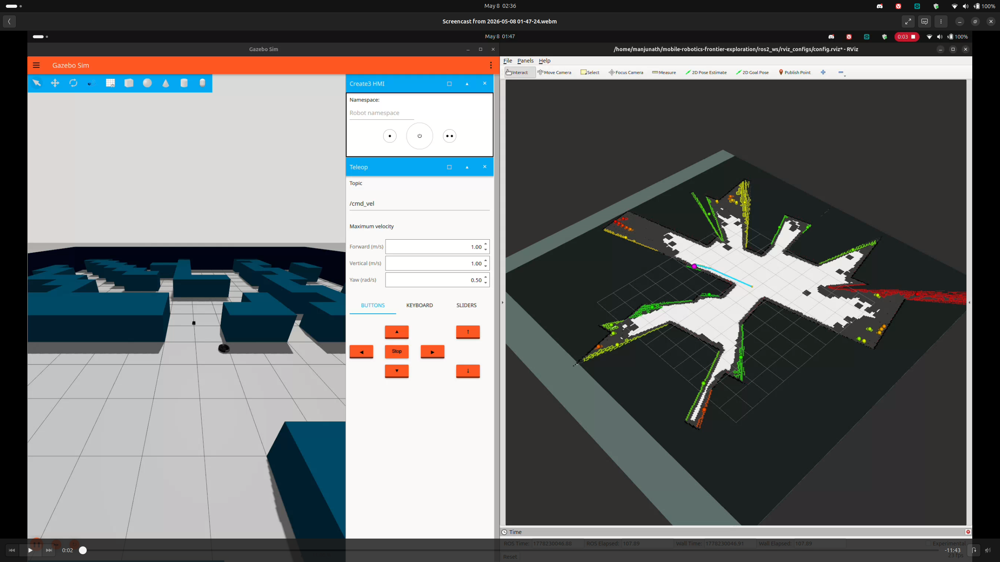
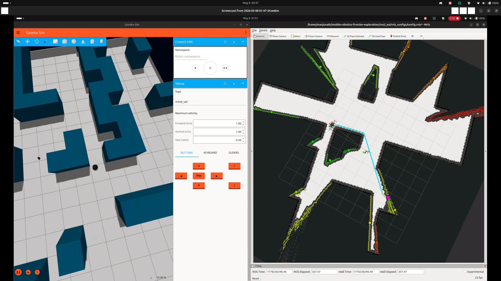
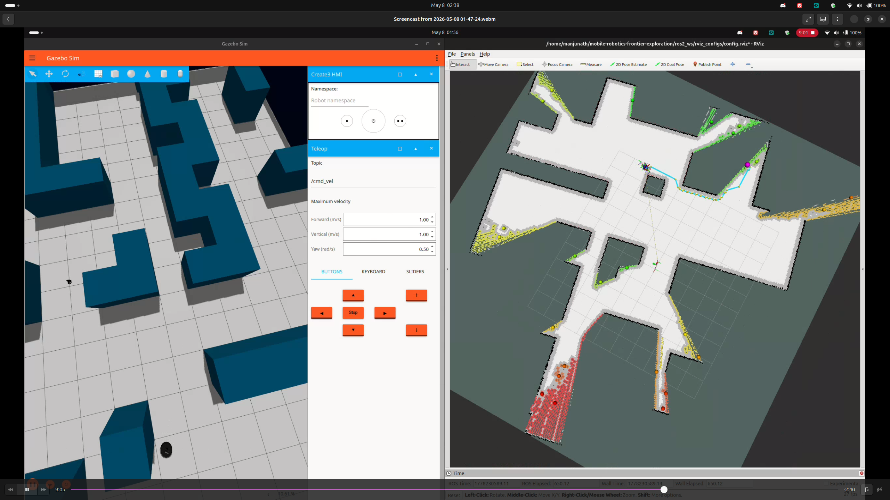

1. Graphical Abstract
A concise pictorial summary of the project mission, key algorithm, and results — following Elsevier visual abstract guidelines: clear left-to-right reading, minimal clutter, legible labels for an interdisciplinary audience and course gallery submission.
RPLIDAR · OAK-D · Create3
Fig. A — Graphical Abstract · RAS 598 · ASU · Spring 2026
The system pipeline processes sensor data through five sequential layers, each communicating over standard ROS 2 topics:
- Layer 1 — SLAM Toolbox: The RPLIDAR A1M8 publishes 640-ray scans at 10 Hz.
async_slam_toolbox_nodeprocesses each scan and builds a 2D occupancy grid at 0.05m/cell resolution, publishing themap→odomTF transform and/maptopic that the entire navigation stack depends on. - Layer 2 — Frontier Explorer Node: On each new map update, the node scans all free cells to find frontier cells (free cells adjacent to unknown cells), groups them by 4-connected flood-fill into clusters, discards clusters smaller than 10 cells, and scores each cluster using nearest-first wavefront scoring (
score = 1/(dist + ε)). The ranked list is published as aPoseArrayto/frontier_goals. - Layer 3 — Behavior Coordinator Node: A 6-state FSM (IDLE → SELECTING → PENDING → NAVIGATING → ARRIVED → DONE) selects the best frontier goal from the list and sends it to the navigation planner via the
/navigate_to_poseaction interface. A proximity lock (3m hysteresis) prevents the robot from switching frontier targets while actively navigating, and a failure blacklist handles unreachable goals. - Layer 4 — Navigation Planner Node: A custom
/navigate_to_poseaction server (replacing Nav2) builds a 3-tier costmap from the SLAM occupancy grid, plans a collision-free path using A* with Euclidean heuristic, prunes waypoints using a swept-corridor line-of-sight test, and drives the robot via a 20 Hz proportional controller at up to 0.35 m/s. - Layer 5 — Semantic Hazard Classifier Node: Five sensor layers run in parallel — hardware cliff sensors (<10ms E-stop), YOLOv5 fire detection, HSV visual analysis, OAK-D depth analysis (pothole/glass), and DeepHAZMAT YOLOv3-tiny (13 HAZMAT classes). A dedicated YOLO worker thread runs inference at 1 Hz to avoid blocking the main executor. Detections publish to
/hazard_alertand/hazard_markersfor RViz2 visualization.
Our system enables a TurtleBot4 Lite to autonomously explore unknown indoor environments while detecting semantic hazards. The robot builds a 2D occupancy map via SLAM, identifies frontier cells at the boundary of known-free and unknown space, plans collision-free paths using A* on a dynamically-updated costmap, and classifies hazards through a 5-layer sensor fusion pipeline integrating hardware sensors, computer vision (DeepHAZMAT, YOLOv5), HSV analysis, depth sensing, and LiDAR sector analysis.
2. Algorithm
Formal specification of the four core custom algorithms. Pseudocode style follows the Overleaf algorithm reference provided by the course instructor. LaTeX equations rendered via KaTeX.
2.1 Frontier Explorer Node
Subscribes to the SLAM OccupancyGrid and identifies frontier cells — free cells adjacent to unknown cells but not adjacent to occupied cells. Clusters scored by inverse distance (nearest-first wavefront).
frontier_explorer_node.py line 94Output: Sorted list of scored frontier clusters
find_frontier_cells(grid):
free_cells ← cells where grid.value == 0 for each cell c in free_cells: if ∃ n ∈ N₄(c): grid[n]==−1 and ∀ n ∈ N₄(c): grid[n]≠100: mark c as frontier
cluster_frontiers(frontier_cells):
clusters ← flood_fill_4connected(frontier_cells) clusters ← filter(clusters, |cluster| ≥ 10) // N_min=10 cells
score_clusters(clusters, r):
for each cluster k: c̄_k ← mean(k.cells) × resolution + origin // world frame centroid dist_k ← ‖r − c̄_k‖₂ score_k ← 1.0 / (dist_k + ε) return sort(clusters, key=score, descending=True)
2.2 Navigation Planner Node
Custom /navigate_to_pose action server replacing Nav2. Builds a costmap, plans via A*, prunes waypoints with a swept-corridor test, and drives with a proportional controller.
// Step 1: Build costmap
occ_grid ← dilate(occupied_cells, 0.03m)
costmap ← assign_costs(occ_grid, r_hard=0.15, r_soft=0.18)
// Step 2: Snap goal to nearest free cell (radius=20 cells)
g_cell ← world_to_cell(g)
if costmap[g_cell] ≥ 80: g_cell ← nearest_free(g_cell, r=20)
if g_cell == null: abort("surrounded by obstacles")
// Step 3: A* path planning
path ← astar(costmap, world_to_cell(r), g_cell)
if path == null: abort("no path found")
// Step 4: Prune waypoints (swept-corridor LOS test)
waypoints ← prune_los(path, half_width=0.20m)
// Step 5: P-controller drive loop @ 20 Hz
while waypoints not empty:
e_ψ ← atan2(wp.y−r.y, wp.x−r.x) − r.θ; normalize(e_ψ) if |e_ψ| > 0.20: publish(v=0, ω=clip(K_P^ω·e_ψ, ±ω_max)) // rotate in place else: publish(v=clip(K_P^v·d_wp, V_min, V_max), ω=clip(K_P^ω·e_ψ, ±ω_max)) if d_wp < 0.25m: waypoints.pop() if no_progress > 6s: abort("stuck in turn") return SUCCEEDED
2.3 Semantic Hazard Classifier Node
Five sensor layers fused into a single hazard alert published on /hazard_alert. A YOLO worker thread runs inference at most once per second.
rpy="0 0 π/2").L1 Hardware — _hw_hazard_cb(HazardDetectionVector):
if det.type == CLIFF: publish_estop() // <10ms E-stop
L2 YOLO — yolo_worker_thread(frame):
hazmat_dets ← yolo_hazmat.predict(frame, conf≥0.55) // DeepHAZMAT 13 classes fire_dets ← yolo_fire.predict(frame, conf≥0.45) // fire_best.pt
L3 HSV — hsv_classifier(frame):
fire ← pixels where H∈[0,15]∪[165,179], S>150, V>200
L4 LiDAR — lidar_cb(scan):
scan_filtered ← scan[scan ≥ 0.20m] // remove self-detections θ_corrected ← θ_lidar − π/2 // +90° URDF mounting offset d_front, d_left, d_right ← sector_mins(scan_filtered, θ_corrected)
L5 Depth — depth_cb(depth_frame):
if nan_ratio(floor_region) > 0.50: detect GLASS if depth_drop > 0.20m in floor plane: detect POTHOLE
// Fusion
if any hazmat_dets: alert='HAZMAT'; publish_rviz_marker()
else: alert='CLEAR'
publish('/hazard_alert', alert)
2.4 Behavior Coordinator FSM
A 6-state FSM managing the exploration lifecycle with proximity lock hysteresis to prevent frontier oscillation.
if state ∈ {IDLE, SELECTING}: _try_select_and_send(); return
if state == PENDING: return // waiting for goal acceptance
// Check if current goal still in frontier list
if active_key ∈ current_frontier_keys: return // goal still valid
// Proximity lock — hold course if within 2×r_lock of anchor
dist ← ‖robot_pos − anchor‖₂
if dist ≤ 2·r_lock: return // hysteresis, don't switch
// Check frontier drift (FRONTIER_SIMILARITY_RADIUS=0.50m)
similar ← find_nearest(frontiers, anchor, r=0.50m)
if similar ≠ null: current_goal_xy ← similar; return // drift, no cancel
// Frontier consumed far from anchor — cancel and reselect
if dist > r_lock: cancel_goal(); state←SELECTING; _try_select_and_send()
3. Benchmarking & Results
Empirical evidence from Gazebo maze world simulation and ASU lab hardware testing.
🎬 Final Demo — Exploration_Demo.mp4 · Full autonomous frontier exploration run on TurtleBot4 Lite. Live SLAM mapping, frontier selection, A* navigation, and semantic hazard detection — zero human input.
Exploration_Demo.mp4 — Final hardware demonstration · RAS 598 Milestone 3 · Spring 2026
3.1 Simulation Results — Gazebo Maze World



Gazebo LiDAR fix (Ogre2): All 640 rays returned 0.164m minimum range due to Ogre1 renderer self-collision. Fixed: sudo sed -i 's/ogre/ogre2/' /opt/ros/jazzy/share/irobot_create_description/urdf/create3.urdf.xacro — GitHub upstream issue #676.
diffdrive_controller timestamp: Wall clock vs sim clock mismatch rejected velocity commands (>0.5s timeout). Fixed: ros2 param set /diffdrive_controller cmd_vel_timeout 2.0
3.2 Hazard Detection Performance
DeepHAZMAT (YOLOv3-tiny, 13 classes)
| Sign | Confidence | Range |
|---|---|---|
| Explosive 1.1 | 92% | ~0.5m |
| Radioactive I | 99% | ~0.5m |
| Flammable | ~85% | ~0.5m |
Inference: ~30ms (RTX 5070 Ti, CUDA 13.1). 7M params, 15.8 GFLOPs.
YOLOv5 Fire (fire_best.pt)
| Source | Confidence | Status |
|---|---|---|
| Phone screen video | 63% | Detected |
| Printed image | <35% | Below threshold |
| Water (disabled) | — | Blue wall FP |
| Hazard | Sensor | Layer | E-stop | Latency | Status |
|---|---|---|---|---|---|
| Cliff | IR ×4 | L1 Hardware | ✅ Yes | <10ms | Done |
| HAZMAT Sign | OAK-D RGB | L5 DeepHAZMAT | ❌ Log only | ~30ms | Done |
| Fire | OAK-D RGB | L2a YOLOv5 | ❌ Log only | ~30ms | Done |
| Narrow corridor | RPLIDAR | L4 LiDAR | ❌ Warn only | ~180ms | Done |
| Pothole | OAK-D Depth | L3 Depth | ❌ Log only | ~100ms | Implemented, hardware pending |
| Glass wall | OAK-D Depth | L3 NaN ratio | ❌ No | ~100ms | Partial |
3.3 Navigation & System Performance
| Parameter | Value |
|---|---|
| V_MAX | 0.35 m/s |
| V_MIN | 0.10 m/s |
| W_MAX | 1.20 rad/s |
| ALIGN_THRESHOLD | 0.20 rad |
| GOAL_THRESHOLD | 0.35 m |
| SNAP_SEARCH_RADIUS | 20 cells |
| Parameter | Value |
|---|---|
| PROXIMITY_LOCK_RADIUS | 3.0 m |
| FRONTIER_SIMILARITY_RADIUS | 0.50 m |
| MAX_GOAL_FAILURES | 5 |
| YOLO_INTERVAL_SEC | 1.0 s |
| NO_DRIVE_TIMEOUT | 6.0 s |
| BATTERY_LOW_PCT | 15% |
4. Ethical Impact Statement
Three ethical frameworks — Utilitarianism, Justice, and Virtue Ethics — applied across Privacy, Safety, and Bias. Analysis grounded in the actual system implementation, authored by Rohit Mane.
Privacy — Data & Sensor Ethics
The OAK-D camera runs at 10Hz, processing video locally in memory within semantic_hazard_classifier_node.py. No personally identifiable data persisted in current prototype. ROS bags capture the full RGB topic during trials.
The OAK-D RGB-D camera operates at 10 Hz, producing a continuous video stream processed for hazard classification. In the current prototype, this stream is not stored on disk — it is consumed in memory and discarded after classification. No personally identifiable data (faces, license plates) is persisted. However, the ROS bag recording mechanism captures the full /oakd/rgb/preview/image_raw topic during trials.
Utilitarian: The current design maximizes net utility — raw RGB data is processed locally with no cloud transmission, minimizing privacy exposure while enabling life-saving hazard detection in disaster scenarios.
Justice: A fair deployment requires explicit operator consent frameworks when used in non-emergency scenarios. Future iterations should implement automatic face-blurring as a standard privacy safeguard.
Virtue Ethics: We recommend: (1) face blurring by default in any persistent recording mode, (2) clear LED indicators on the robot chassis signaling active camera operation, and (3) data retention policies limiting ROS bag storage to 24 hours in non-research deployments.
Safety — Kinetic Energy & Risk
TurtleBot4 Lite (4kg) at 0.35m/s gives $KE\approx0.245\text{ J}$ — well below the ISO/TS 15066 1J minor injury threshold. Five independent safety mechanisms implemented.
The TurtleBot4 Lite has a mass of approximately 4 kg. At maximum velocity 0.35 m/s: $KE = \frac{1}{2}(4)(0.1225) \approx 0.245\text{ J}$ — below the 1 J threshold in ISO/TS 15066.
Five safety mechanisms: (1) Hardware cliff sensors <10ms E-stop, (2) Semantic E-stop ≤100ms, (3) Battery guardian <15%, (4) Deadman switch 5s frontier timeout→IDLE, (5) Max goal failure blacklisting.
Utilitarian: The five-layer architecture maximizes aggregate safety. No single point of failure causes uncontrolled motion.
Justice: All humans retain equal right to physical safety regardless of awareness of the robot. The 5-second deadman switch addresses the justice concern that uninformed bystanders may not anticipate robot behavior.
Future risk: At speeds ≥0.5 m/s or with heavier payload, KE exceeds 0.5 J and formal HRI safety assessment becomes mandatory.
Bias — Limitations & Fairness
Three primary bias sources: (1) RPLIDAR cannot detect glass walls. (2) HSV thresholds calibrated only under ASU ISTB lab fluorescent lighting. (3) Frontier scoring may approach hazardous zones before classifier triggers.
Hardware Bias — Glass: The RPLIDAR A1M8 emits 905 nm IR pulses. Glass surfaces refract this wavelength, causing the LiDAR to perceive glass walls as free space. Our L3 depth layer partially compensates by detecting high NaN ratio (NaN >50% → GLASS), but the LiDAR-based costmap does not mark glass as obstacles.
Lighting Bias: The L2 RGB layer uses fixed HSV thresholds calibrated under ASU ISTB fluorescent lighting. In different ambient lighting, these thresholds produce false positives or false negatives.
Algorithmic Frontier Bias: The nearest-first scoring may direct the robot toward hazardous zones that happen to be nearby before the 100ms classifier cycle triggers an E-stop.
Virtue Ethics: Acknowledging bias is a moral obligation. We commit to publishing the HSV threshold calibration dataset, HAZMAT test results, and ROS bag recordings as open-source artifacts.
5. Custom Module Code Links
Every custom module with direct GitHub links to specific files and key line numbers.
6. Individual Contribution & Audit Appendix
All contributions verifiable via git log at github.com/PriColon/mobile-robotics-frontier-exploration.
| Team Member | Primary Role | Key Contributions | File Authorship |
|---|---|---|---|
| Princess Colon pcolon@asu.edu |
Navigation, Frontier Planning & Integration |
|
frontier_explorer_node.pynavigation_planner.pybehavior_coordinator_node.pyexploration.launch.py |
| Manjunath Kondamu mkondamu@asu.edu |
Perception, Hazard Detection & Website Design |
|
semantic_hazard_classifier_node.pyscan_relay_node.pyindex.htmlmilestone1–3.html |
| Rohit Mane rmane2@asu.edu |
Mathematical Documentation & Ethics |
|
slam_sim.yamlmathematics_merged.tex |